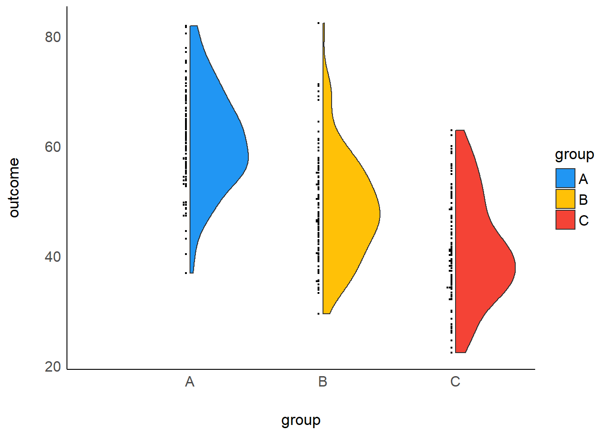
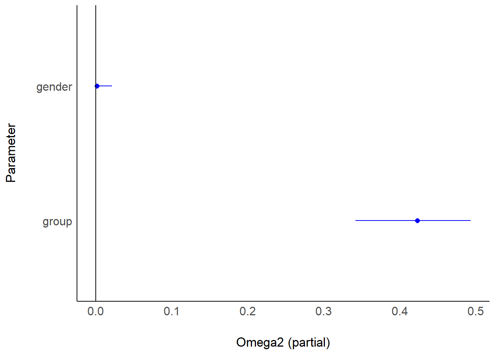

chapter: 5 分散の効果量
後で加筆。
5.1 一元配置分散分析
# data for ANOVA
gender <- rep(c("M","F"), times=150)
group <- rep(c("A","B","C"), each=100)
set.seed(123)
A <- rnorm(100, 60, 10)
B <- rnorm(100, 50, 10)
C <- rnorm(100, 40, 10)
dat <- data.frame(gender=gender, group=group, outcome=c(A, B, C))
# One way ANOVA
res1 <- lm(outcome ~ group, data = dat)
library(parameters)
model_parameters(anova(res1), eta_squared="raw")## Parameter | Sum_Squares | df | Mean_Square | F | p | Eta2
## --------------------------------------------------------------------
## group | 19705.74 | 2 | 9852.87 | 110.68 | < .001 | 0.43
## Residuals | 26438.60 | 297 | 89.02 | | |
##
## Anova Table (Type 1 tests)5.1.1 効果量
# eta^2
library(effectsize)
eta_squared(res1, partial = FALSE, alternative = "two.sided")## # Effect Size for ANOVA (Type I)
##
## Parameter | Eta2 | 95% CI
## -------------------------------
## group | 0.43 | [0.35, 0.50]19705.74/(19705.74+26438.60)## [1] 0.4270457# 95%CI
library(MBESS)
par <- model_parameters(anova(res1), eta_squared="raw")
lambda.ci <- conf.limits.ncf(F.value=par$F[1], df.1 = par$df[1], df.2 = par$df[2], conf.level = .95) # 非心F分布
lambda.ci$Lower.Limit/(300+lambda.ci$Lower.Limit)## [1] 0.3437476lambda.ci$Upper.Limit/(300+lambda.ci$Upper.Limit)## [1] 0.49459925.2 二元配置分散分析
# partial eta^2
res2 <- lm(outcome ~ gender + group, data = dat)
parameters::model_parameters(anova(res2))## Parameter | Sum_Squares | df | Mean_Square | F | p
## -------------------------------------------------------------
## gender | 120.27 | 1 | 120.27 | 1.35 | 0.246
## group | 19705.74 | 2 | 9852.87 | 110.81 | < .001
## Residuals | 26318.33 | 296 | 88.91 | |
##
## Anova Table (Type 1 tests)eta_squared(res2, partial = TRUE, alternative = "two.sided")## # Effect Size for ANOVA (Type I)
##
## Parameter | Eta2 (partial) | 95% CI
## -----------------------------------------
## gender | 4.55e-03 | [0.00, 0.03]
## group | 0.43 | [0.35, 0.50]# partial omega^2
omega_squared(res2, partial = TRUE, alternative = "two.sided")## # Effect Size for ANOVA (Type I)
##
## Parameter | Omega2 (partial) | 95% CI
## -------------------------------------------
## gender | 1.17e-03 | [0.00, 0.02]
## group | 0.42 | [0.34, 0.49]plot(omega_squared(res2, partial = TRUE, alternative = "two.sided"))
5.2.0.1 結果の報告
# Report
library(report)
res2 <- aov(outcome ~ gender + group, data = dat)
report_table(res2)## Parameter | Sum_Squares | df | Mean_Square | F | p | Eta2 (partial) | Eta2_partial 95% CI
## ----------------------------------------------------------------------------------------------------
## gender | 120.27 | 1 | 120.27 | 1.35 | 0.246 | 4.55e-03 | [0.00, 1.00]
## group | 19705.74 | 2 | 9852.87 | 110.81 | < .001 | 0.43 | [0.36, 1.00]
## Residuals | 26318.33 | 296 | 88.91 | | | |report(res2)## The ANOVA (formula: outcome ~ gender + group) suggests that:
##
## - The main effect of gender is statistically not significant and very small (F(1, 296) = 1.35, p = 0.246; Eta2 (partial) = 4.55e-03, 95% CI [0.00, 1.00])
## - The main effect of group is statistically significant and large (F(2, 296) = 110.81, p < .001; Eta2 (partial) = 0.43, 95% CI [0.36, 1.00])
##
## Effect sizes were labelled following Field's (2013) recommendations.5.2.1 ベイズ
# For a Bayesian Test
gender <- rep(c("M","F"), times=150)
group <- rep(c("A","B","C"), each=100)
set.seed(123)
A <- rnorm(100, 60, 10)
B <- rnorm(100, 50, 10)
C <- rnorm(100, 40, 10)
dat <- data.frame(gender=gender, group=group, outcome=c(A, B, C))
library(rstanarm)
m_bayes <- stan_glm(outcome ~ gender + group,
data = dat, family = gaussian(),
refresh = 0)
prior_summary(m_bayes)## Priors for model 'm_bayes'
## ------
## Intercept (after predictors centered)
## Specified prior:
## ~ normal(location = 50, scale = 2.5)
## Adjusted prior:
## ~ normal(location = 50, scale = 31)
##
## Coefficients
## Specified prior:
## ~ normal(location = [0,0,0], scale = [2.5,2.5,2.5])
## Adjusted prior:
## ~ normal(location = [0,0,0], scale = [62.01,65.77,65.77])
##
## Auxiliary (sigma)
## Specified prior:
## ~ exponential(rate = 1)
## Adjusted prior:
## ~ exponential(rate = 0.08)
## ------
## See help('prior_summary.stanreg') for more detailslibrary(effectsize)
pes_posterior <- eta_squared_posterior(m_bayes,
draws = 1000,
partial = T) #事後予測分布からのサンプリング## Simulating effect size... This can take a while...library(bayestestR)
describe_posterior(pes_posterior, rope_range = c(0, 0.1), test = "rope")## Summary of Posterior Distribution
##
## Parameter | Median | 95% CI | ROPE | % in ROPE
## --------------------------------------------------------------
## gender | 5.46e-03 | [0.00, 0.05] | [0.00, 0.10] | 100%
## group | 0.43 | [0.32, 0.52] | [0.00, 0.10] | 0%5.2.1.1 結果の報告
# Report
library(report)
report_table(m_bayes)## Parameter | Median | 95% CI | pd | % in ROPE | Rhat | ESS | Prior | Std. Median | Std_Median 95% CI | Fit
## -----------------------------------------------------------------------------------------------------------------------------------------------------
## (Intercept) | 60.25 | [ 58.12, 62.35] | 100% | 0% | 1.000 | 3463.00 | Normal (50.34 +- 31.06) | 0.80 | [ 0.63, 0.97] |
## genderM | 1.24 | [ -0.91, 3.37] | 86.85% | 50.21% | 1.000 | 4475.00 | Normal (0.00 +- 62.01) | 0.10 | [-0.07, 0.27] |
## groupB | -11.95 | [-14.61, -9.23] | 100% | 0% | 1.000 | 3577.00 | Normal (0.00 +- 65.77) | -0.96 | [-1.18, -0.75] |
## groupC | -19.65 | [-22.31, -17.00] | 100% | 0% | 0.999 | 3320.00 | Normal (0.00 +- 65.77) | -1.58 | [-1.79, -1.38] |
## | | | | | | | | | |
## ELPD | | | | | | | | | | -1101.91
## LOOIC | | | | | | | | | | 2203.81
## WAIC | | | | | | | | | | 2203.79
## R2 | | | | | | | | | | 0.43
## R2 (adj.) | | | | | | | | | | 0.42
## Sigma | | | | | | | | | | 9.43report(m_bayes)## We fitted a Bayesian linear model (estimated using MCMC sampling with 4 chains of 2000 iterations and a warmup of 1000) to predict outcome with gender and group (formula: outcome ~ gender + group). Priors over parameters were set as normal (mean = 0.00, SD = 62.01), normal (mean = 0.00, SD = 65.77) and normal (mean = 0.00, SD = 65.77) distributions. The model's explanatory power is substantial (R2 = 0.43, 95% CI [0.35, 0.51], adj. R2 = 0.42). The model's intercept, corresponding to gender = F and group = A, is at 60.25 (95% CI [58.12, 62.35]). Within this model:
##
## - The effect of gender [M] (Median = 1.24, 95% CI [-0.91, 3.37]) has a 86.85% probability of being positive (> 0), 70.83% of being significant (> 0.62), and 1.05% of being large (> 3.73). The estimation successfully converged (Rhat = 1.000) and the indices are reliable (ESS = 4475)
## - The effect of group [B] (Median = -11.95, 95% CI [-14.61, -9.23]) has a 100.00% probability of being negative (< 0), 100.00% of being significant (< -0.62), and 100.00% of being large (< -3.73). The estimation successfully converged (Rhat = 1.000) and the indices are reliable (ESS = 3577)
## - The effect of group [C] (Median = -19.65, 95% CI [-22.31, -17.00]) has a 100.00% probability of being negative (< 0), 100.00% of being significant (< -0.62), and 100.00% of being large (< -3.73). The estimation successfully converged (Rhat = 0.999) and the indices are reliable (ESS = 3320)
##
## Following the Sequential Effect eXistence and sIgnificance Testing (SEXIT) framework, we report the median of the posterior distribution and its 95% CI (Highest Density Interval), along the probability of direction (pd), the probability of significance and the probability of being large. The thresholds beyond which the effect is considered as significant (i.e., non-negligible) and large are |0.62| and |3.73| (corresponding respectively to 0.05 and 0.30 of the outcome's SD). Convergence and stability of the Bayesian sampling has been assessed using R-hat, which should be below 1.01 (Vehtari et al., 2019), and Effective Sample Size (ESS), which should be greater than 1000 (Burkner, 2017).